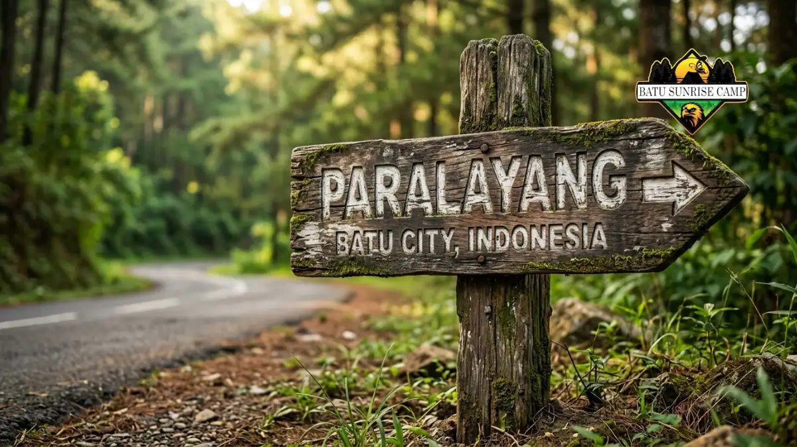

Rute menuju tempat camping paralayang Batu dimulai dari Alun-Alun Batu ke arah Pujon, lalu berbelok menuju Gunung Banyak melalui jalan menanjak dengan papan penunjuk arah.
Bagaimana Cara Menuju Camping Paralayang Batu dari Alun-Alun Batu?
Cara menuju camping paralayang Batu dari Alun-Alun Batu adalah dengan mengambil arah menuju Pujon, kemudian berbelok di pertigaan menuju Gunung Banyak.
Setelah tiba di Alun-Alun Batu sebagai titik awal, wisatawan tinggal mengikuti jalan utama ke arah Pujon.
Di sepanjang rute ini, jalan akan mulai menanjak khas kawasan pegunungan, dengan pemandangan kebun sayur dan perbukitan di kanan-kiri jalan.
Setibanya di pertigaan menuju Gunung Banyak, pengunjung tinggal mengikuti papan penunjuk arah yang biasanya sudah tersedia di titik-titik strategis untuk menuntun menuju area camping dan wisata paralayang.
Bagi yang menggunakan aplikasi navigasi daring, mencari titik "Wisata Paralayang Batu" atau nama camp ground tujuan seperti Romantic Camp Bistro biasanya sudah cukup akurat untuk memandu perjalanan hingga ke lokasi.
Apa Kondisi Jalan Menuju Lokasi Camping Ini?
Kondisi jalan menuju lokasi camping paralayang Batu umumnya berupa jalan menanjak khas dataran tinggi dengan beberapa tikungan, sehingga kewaspadaan ekstra diperlukan terutama saat cuaca kurang bersahabat.
Jalan menuju Gunung Banyak sebagian besar sudah beraspal, namun karena berada di area pegunungan, tanjakan dan tikungan menjadi hal yang wajar ditemui sepanjang perjalanan.
Saat musim hujan atau ketika kabut turun, jarak pandang bisa berkurang sehingga kecepatan berkendara sebaiknya dikurangi.
Memastikan kondisi rem dan ban kendaraan dalam keadaan baik sebelum berangkat menjadi langkah pencegahan yang penting, terutama bagi pengendara motor.

Papan petunjuk arah menuju wisata paralayang Batu.
Kendaraan Apa yang Cocok Digunakan Menuju Paralayang Batu?
Kendaraan roda dua maupun roda empat sama-sama dapat digunakan menuju kawasan Paralayang Batu, karena jalan akses sudah cukup lebar dan dapat dilalui berbagai jenis kendaraan pribadi.
Bagi wisatawan yang menggunakan sepeda motor, disarankan memastikan kondisi mesin dan rem dalam keadaan prima karena rute memiliki tanjakan cukup panjang.
Sementara itu, bagi yang membawa mobil, terutama rombongan keluarga dengan perlengkapan camping yang lebih banyak, kapasitas bagasi yang memadai akan sangat membantu, mengingat area parkir di lokasi wisata umumnya cukup luas untuk menampung berbagai jenis kendaraan.
Bagi rombongan besar atau komunitas, menggunakan kendaraan sewaan seperti minibus juga menjadi opsi yang umum digunakan, terutama jika perjalanan dilakukan bersama-sama dari luar Kota Batu.
Berapa Lama Waktu Tempuh Menuju Camping Paralayang Batu?
Waktu tempuh menuju camping paralayang Batu dari Alun-Alun Batu umumnya tergolong singkat, mengingat kawasan Gunung Banyak masih berada dalam wilayah Kota Batu itu sendiri.
Durasi pastinya dapat bervariasi tergantung kondisi lalu lintas dan cuaca, namun secara umum kawasan ini masih dapat dijangkau dalam waktu perjalanan yang relatif singkat dari pusat kota, sehingga cocok untuk kunjungan singkat di akhir pekan tanpa perlu perencanaan perjalanan jauh.
Faktor lain yang memengaruhi waktu tempuh adalah kepadatan kendaraan saat musim liburan, mengingat kawasan Batu secara umum termasuk destinasi wisata populer di Jawa Timur yang ramai dikunjungi pada periode tersebut.
Kesimpulan
Menuju tempat camping paralayang Batu tidaklah rumit selama mengikuti rute utama dari Alun-Alun Batu ke arah Pujon, lalu berbelok menuju Gunung Banyak sesuai papan penunjuk arah.
Pastikan kendaraan dalam kondisi baik, terutama karena rute menanjak, dan berangkat lebih awal saat akhir pekan untuk menghindari kepadatan.